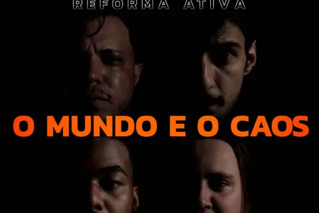

“O Mundo e o Caos” da Reforma Ativa

Por: Vinícius Aliprandino
O individualismo que nos cega. O caos que se tornou a convivência em sociedade, que não sabe chegar a um consenso, muito menos buscar um caminho para o bem comum, que fuja das manipulações de quem está no comando. Quem são os culpados? “Há quem diga que somos os culpados“.
Com a potência musical, carregada de hardcore, crítica, muito peso, coros gritados, que soam como verdadeiros alarmes; reflexão e desespero diante do despertar e da consciência em saber das amarras e caminhos que a humanidade, respectivamente, está presa e trilha, a banda paulista, Reforma Ativa, lançou o clipe de “O Mundo e o Caos“.
A música busca, logo de início, mostrar a que veio, atirando pedras na janela, que se estilhaça. Ali é onde a banda questiona o que é visto através daquele portal, que pode ser encarado como o próprio mundo.
Limites e manipulação
Quadrado, limitado – e aqui podemos entender essa mesma janela, como a televisão ou os meios utilizados para compreender as meia-verdades enlatadas; e que, ao mesmo tempo que traz conforto e segurança, aprisiona no próprio mundo, de modo que dali para fora, nada importa e nada é compreendido e nem vivenciado, como realmente deveria ser.
Com fortes alertas e críticas ao individualismo, julgamentos e moralismo, a Reforma Ativa mostra que a busca por um objetivo que possa beneficiar a todos e o simples fato de enxergar e torcer pelo próximo, é muitas vezes distorcida e manipulada por quem detém o poder de nossa sociedade, de maneira que permita que essa lógica social não seja invertida e, então, esses se perpetuem no poder.
Tomado por uma apatia infinita, que impede qualquer tipo de reação do problema, o cenário é guiado pela auto destruição, de seres sustentados e aprisionados pelo ego, vivendo em uma miséria continua.
“Criados para destrui tudo ao nosso redor
sem nunca entender
o que no outro há de melhor”
O clipe
Em um ambiente escuro e de desespero, a banda exibe sua performance, intercalando com cenas em que o personagem central do clipe, interpretado pelo vocalista Ge Oliver, vive suas frustrações, diante do espelho confrontando o próprio ego, ou de frente de uma televisão, hipnotizado pelos padrões e regras a serem seguidos.
O clipe teve a produção da Folk Films e contou com direção, roteiro, montagem e edição de Matheus Carniel. A produção geral foi realizada por Raquel Esteban. A parte de assistência de produção ficou a cargo de Joabe Bruno, enquanto que Matheus Carniel e Felipe Barreto cuidaram da parte de direção de fotografia. A Iluminação foi cuidada por de André Zoio, com a assistência de Aline Orteiro. A assistência de direção foi feita por Raquel Esteban.
A faixa foi produzida, gravada, mixada e masterizada por Rômulo Felício, no Under Studio, na cidade de Ribeirão Preto-SP.
A Reforma Ativa nasceu na cidade de Brodowski-SP e conta com Ge Oliver (voz), Rafael Peghini (baixo), Valdir Junior (guitarra) e Murilo Henrique – Mustafá (bateria).
Confiram o clipe de “O Mundo e o Caos” no link abaixo e acompanhem o trabalho da Reforma Ativa, através da página oficial da banda no Facebook e do perfil no Instagram.